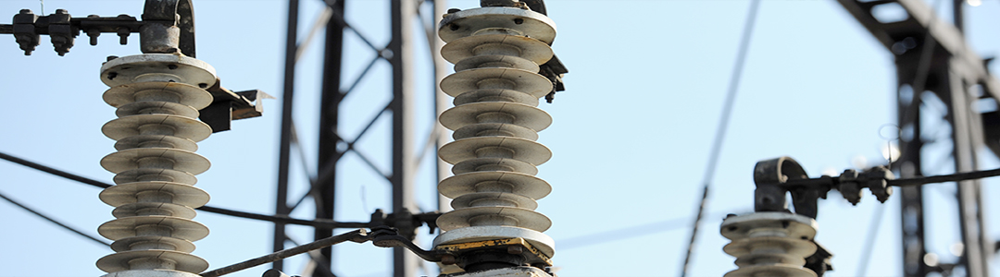
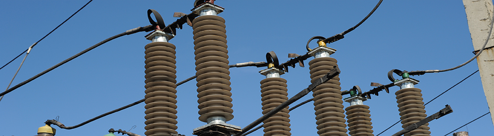

Опорные изоляторы ОСК 35 кВ
Изоляторы опорные стержневые полимерные ОСК (альтернативные названия ИОСК, ИОС, ИО, ОНШ) на напряжение 35 кВ. Фарфоровые аналоги: ИОР-35, ИОС-35, ОНШ-35, ОНС-35, ИШД-35, С4-195, С16-200.





Изоляторы ОСК
Изоляторы опорные стержневые полимерные ОСК (альтернативные названия ИОСК, ИОС, ИО, ОНШ) с цельнолитой защитной оболочкой пришли на смену устаревшим фарфоровым изоляторам ИОС, УСТ, ОНШ, ИШТ, ОНС, АКО более 12 лет назад. Они отличаются более высокими качественно-эксплуатационными характеристиками, надёжностью, лёгкостью монтажа и обслуживания.
Изоляторы ОСК не нуждаются в очистке изоляционной оболочки. За счёт малого веса по сравнению с фарфоровыми аналогами их можно монтировать без крановой техники. Они стойки к вандализму и к механическим воздействиям (дробь, осколки и т. п.).
ОСК полностью взаимозаменяемы с фарфоровыми аналогами, поэтому замену можно выполнять без изменения конструкции оборудования. Малый вес позволяет экономить на металлоконструкциях при производстве разъединителей и при строительстве фундаментов подстанционного оборудования.
Опорные стержневые изоляторы ОСК на напряжение от 10 до 220 кВ более 20 лет эксплуатируются на объектах ДТЭК Энерго, Укрэнерго, Укрзализныци, а также в ведущих облэнерго Украины. Гарантийный срок эксплуатации — от 5 до 10 лет.
Производственная база располагает собственной электромеханической лабораторией: каждый изолятор проходит механические и электрические испытания. Партнёрами предприятия являются ведущие в Украине производители арматуры, поэтому возможна комплексная поставка необходимых материалов (зажимы, контакторы и т. д.).
Модели ОСК на 35 кВ
Моделей: 29. Для 7 из них доступны подробные технические характеристики (название модели — ссылка).
| Модель | Строит. высота, мм | Фарфоровый аналог | Варианты обозначения | Чертёж |
|---|---|---|---|---|
| ОСК 8-35/190-1 | 372±1,5 | ИОР35-7,5 У3, ИОР-35/7,5 У3, ИОР-35-750 У3, ИОР-35-7.5 У3 | ИОСК 8/35, ИОСК 8/35-2 УХЛ2 | OSK8-35-190-1.pdf |
| ОСК 8-35/190-3 | 440±1 | С4-195-I-М УХЛ1, С4-195-II УХЛ1, С4-195-1 УХЛ1, С4-195-2 УХЛ1, СЧ-195-I УХЛ1, СЧ-195-II УХЛ1 | ОСК 8-35-А-2, -Б-2, -В-2, -Г-2, -Д-2, -М-2, -Н-2; ОСК 10-35-2А-02; ОСК 8-35-3А; ОСК 8-35-3А-02 | 63.pdf |
| ОСК 8-35/190-3-01 | 440±1 | ИОС-35/500 УХЛ1, ИОС-35-500 УХЛ1, ИОС35-500 УХЛ1, ОИС-35-500 УХЛ1, ОНС-35-500 У1, ОНС-35/500 | ИОСК-8-35-440-2, ИОСК 8-35-440-2 УХЛ1, ИОСК-8-35-440-3, ИОСК 8-35-440-3 УХЛ1; ОСК 8-35-А-2…Н-2; ОСК 8-35-3А | 63-01.pdf |
| ОСК 10-35/190-2 | 400±1 | — | — | 64.pdf |
| ОСК 10-35/190-2-02 | 400±1 | И10-195 УХЛ1, Т1, ОНВП-35-1000 У1, ОНВП-35-10-1 У1, ОНВП35-1000У1 | ОСК 10-35-2А-02, ИОСК 20-35-400-3 | 64-02.pdf |
| ОСК 10-35/195-2 | 500±1 | — | — | 65.pdf |
| ОСК 12,5-35/190-3 | 440±1 | — | ИОСК 12,5-35-440-3, ОСК 10-35-2А-04 | 66.pdf |
| ОСК 12,5-35/190-3-01 | 440±1 | — | — | OSK12,5-35-190-3-01.pdf |
| ОСК 12,5-35/190-3-03 | 880±1 | Колонка ИОС 35-500-01 + ИОС 35-500-01 | — | OSK12,5-35-190-3-03.pdf |
| ОСК 12,5-35/190-3-04 | 440±1 | — | — | OSK12,5-35-190-3-04.pdf |
| ОСК 12,5-35/190-3-05 | 440±1 | — | — | OSK12,5-35-190-3-05.pdf |
| ОСК 12,5-35/190-3-06 | 440±1 | — | — | OSK12,5-35-190-3-06.pdf |
| ОСК 12,5-35/190-3-07 | 500±1 | ИОС-35/1000 УХЛ1, ИОС-35-1000 УХЛ1, ИОС35-1000 УХЛ1, ОИС-35-1000 УХЛ1, ОНС-35-1000 УХЛ1, ОНСУ-40-1000 УХЛ1 | ИОСК 12,5-35-500-4, ОСК 10-35-3, ОСК 10-35-А-4, ИОСК 10-35-500-2 УХЛ1, ИОСК 10-35-500-1 | OSK12,5-35-190-3-07.pdf |
| ОСК 12,5-35/190-3-08 | 440±1 | — | ОСК 27,5-8-А3 | OSK12,5-35-190-3-08.pdf |
| ОСК 12,5-35/190-3-09 | 440±2 | — | — | OSK12,5-35-190-3-09.pdf |
| ОСК 12,5-35/195-2 | 440±1 | — | ИОСК 12,5-35-440-3, ИОСК 12,5-35-440-4 | 67.pdf |
| ОСК 12,5-35/195-2-01 | 440±2 | — | — | OSK12,5-35-195-2-01.pdf |
| ОСК 20-35/190-2 | 400±1 | — | ИОСК 20-35-400-2, ОСК 20-35-А012-2 УХЛ1, ОСК 20-35-А014-2 УХЛ1, ОСК 16-35-А-2 УХЛ1, ОСК 16-35-Д-2 УХЛ1, ОСК 16-35-Ж-2 УХЛ1, ОСК 16-35-И-2 УХЛ1, ОСК 20-35-2А, ОСК 20-35-Б-2 УХЛ1 | 68.pdf |
| ОСК 20-35/190-2-01 | 400±1 | ОШН-20-190А, ШТ-35, ОНШ-35-2000, ОШН20-195, ОНШ35-20, ОНШ-20-195 УХЛ1, ОШН-35-20-1, ИШД-35, ОНШ 35-1000 | ОНШП-35-20 УХЛ1, ОНШП-35-20 У1, ОНШП 35-10, ИОСК 20-35-400-2 УХЛ1 | OSK20-35-190-2-01.pdf |
| ОСК 20-35/190-2-02 | 400±1 | ИШД 35 | ОСК 20-35-2А, ИОСК 20-35-400-2 | OSK35.pdf |
| ОСК 20-35/190-2-03 | 400±1 | — | ОНСУ-40-1000 | OSK20-35-190-2-03.pdf |
| ОСК 20-35/190-2-04 | 400±1 | — | ОСК 20-35-2А-04, ОСК 20-35-2А-02 | OSK20-35-190-2-04.pdf |
| ОСК 20-35/190-2-05 | 400±1 | ОШН-20-190А, ШТ-35, ОНШ-35-2000, ОШН20-195, ОНШ35-20, ОНШ-20-195 УХЛ1, ОШН-35-20-1, ИШД-35, ОНШ 35-1000 | ИОСК 20-35-400-2, ОСК 20-35-А012-2 УХЛ1, ОСК 20-35-А014-2 УХЛ1, ОСК 16-35-А-2 УХЛ1, ОСК 20-35-2А | OSK20-35-190-2-05.pdf 68.pdf |
| ОСК 20-35/190-2-06 | 400±1 | — | ОСК 20-35-2А-01, ИОСК 20-35-400-2 | OSK35.pdf |
| ОСК 20-35/190-2-08 | 400±1 | — | ОСК 20-35-2А-01, ИОСК 20-35-400-2 | OSK35.pdf |
| ОСК 20-35/195-3 | 500±2 | ИОС-35/2000 УХЛ1, ИОС-35-2000 УХЛ1, ИОС35-2000 УХЛ1, ОИС-35-2000 УХЛ1 | ОСК 20-35-3В, ИОСК 20-35-500-3 УХЛ1, ОСК 20-35-А-2, -Б-2, -В-2, -Г-2, -Д-2, -Е-2 | OSK_20_195.pdf OSK35.pdf |
| ОСК 20-35/195-3-01 | 500±2 | — | ОСК 20-35-2В-01, ИОСК 20-35-500-3 | OSK35.pdf |
| ОСК 20-35/200-3 | 560±2 | С16-200-I, С20-200, С20-200-I | ОСК 20-35-Д02-2, ОСК 20-35-В-3 УХЛ1, ОСК 20-35-Г-3 УХЛ1, ОСК 20-35-Д-3 УХЛ1, ИОСК-20-35-560-1, ИОСК-20-35-560-2 | 70.pdf |
| ОСК 20-35/200-3-01 | 560±2 | — | — | — |
Строительная высота и другие размеры могут уточняться по чертежу. Если нужной модели нет в списке, свяжитесь с нами — подберём аналог.
Технические характеристики моделей
Раскройте нужную модель, чтобы увидеть параметры.
ОСК 8-35/190-1 УХЛ2характеристики
Опорный стержневой полимерный изолятор для изоляции и крепления токоведущих частей в электрических аппаратах, распределительных устройствах электростанций и подстанций переменного тока. Рабочий диапазон температур от −60 до +50 °C, высота установки не более 1000 м над уровнем моря. Соответствует СОУ МПЕ 40.1.51.302:2006.
Заменяет фарфоровые: ИОР35-7,5 У3, ИОР-35/7,5 У3, ИОР-35-750 У3, ИОР-35-7.5 У3
Варианты обозначения полимерных аналогов: ИОСК 8/35, ИОСК 8/35-2 УХЛ2
| Показатель | ОСК 8-35/190-1 |
|---|---|
| Номинальное напряжение, кВ | 35 |
| Мин. разрушающая сила при изгибе, кН | 8 |
| Грозовой импульс 1,2/50, кВ | 190 |
| Промышленная частота, кВ: в сухом состоянии | 95 |
| Промышленная частота, кВ: под дождём | 80 |
| 50%-е разрядное напряжение в загрязнённом и увлажнённом состоянии, кВ (уд. проводимость) | 42 (5 мкСм) |
| Длина пути утечки, мм | 630±10 |
| Уровень частичных разрядов, пКл | ≤ 2 |
| Климатическое исполнение (ГОСТ 15150) | УХЛ2 |
ОСК 8-35/190-3 УХЛ1характеристики
Опорный стержневой полимерный изолятор для изоляции и крепления токоведущих частей в электрических аппаратах, распределительных устройствах электростанций и подстанций переменного тока. Рабочий диапазон температур от −60 до +50 °C, высота установки не более 1000 м над уровнем моря. Соответствует СОУ МПЕ 40.1.51.302:2006.
Заменяет фарфоровые: С4-195-I-М УХЛ1, С4-195-II УХЛ1, С4-195-1 УХЛ1, С4-195-2 УХЛ1, СЧ-195-I УХЛ1, СЧ-195-II УХЛ1
Варианты обозначения полимерных аналогов: ОСК 8-35-А-2, -Б-2, -В-2, -Г-2, -Д-2, -М-2, -Н-2; ОСК 10-35-2А-02; ОСК 8-35-3А; ОСК 8-35-3А-02
| Показатель | ОСК 8-35/190-3 |
|---|---|
| Номинальное напряжение, кВ | 35 |
| Мин. разрушающая сила при изгибе, кН | 8 |
| Степень загрязнения атмосферы (ГОСТ 9920) | 3 |
| Грозовой импульс 1,2/50, кВ | 195 |
| Промышленная частота, кВ: в сухом состоянии | 95 |
| Промышленная частота, кВ: под дождём | 80 |
| Среднее разрядное напряжение пром. частоты в сухом состоянии, кВ | 142 |
| 50%-е разрядное напряжение полного грозового импульса, кВ | 232 |
| 50%-е разрядное напряжение в загрязнённом и увлажнённом состоянии, кВ (уд. проводимость) | 44 (20 мкСм) |
| Длина пути утечки, мм | 1100±50 |
| Уровень частичных разрядов, пКл | ≤ 2 |
| Климатическое исполнение (ГОСТ 15150) | УХЛ1 |
ОСК 8-35/190-3-01 УХЛ1характеристики
Опорный стержневой полимерный изолятор для изоляции и крепления токоведущих частей в электрических аппаратах, распределительных устройствах электростанций и подстанций переменного тока. Рабочий диапазон температур от −60 до +50 °C, высота установки не более 1000 м над уровнем моря. Соответствует СОУ МПЕ 40.1.51.302:2006.
Заменяет фарфоровые: ИОС-35/500 УХЛ1, ИОС-35-500 УХЛ1, ИОС35-500 УХЛ1, ОИС-35-500 УХЛ1, ОНС-35-500 У1, ОНС-35/500
Варианты обозначения полимерных аналогов: ИОСК-8-35-440-2, ИОСК 8-35-440-2 УХЛ1, ИОСК-8-35-440-3, ИОСК 8-35-440-3 УХЛ1; ОСК 8-35-А-2…Н-2; ОСК 8-35-3А
| Показатель | ОСК 8-35/190-3-01 |
|---|---|
| Номинальное напряжение, кВ | 35 |
| Мин. разрушающая сила при изгибе, кН | 8 |
| Степень загрязнения атмосферы (ГОСТ 9920) | 3 |
| Грозовой импульс 1,2/50, кВ | 190 |
| Промышленная частота, кВ: в сухом состоянии | 95 |
| Промышленная частота, кВ: под дождём | 80 |
| Среднее разрядное напряжение пром. частоты в сухом состоянии, кВ | 142 |
| 50%-е разрядное напряжение полного грозового импульса, кВ | 232 |
| 50%-е разрядное напряжение в загрязнённом и увлажнённом состоянии, кВ (уд. проводимость) | 45 (20 мкСм) |
| Мин. разрушающий крутящий момент, кН·м | 2 |
| Длина пути утечки, мм | 1100±50 |
| Уровень частичных разрядов, пКл | ≤ 2 |
| Масса, кг, не более | 6 |
| Климатическое исполнение (ГОСТ 15150) | УХЛ1 |
ОСК 12,5-35/190-3-07 УХЛ1характеристики
Опорный стержневой полимерный изолятор для изоляции и крепления токоведущих частей в электрических аппаратах, распределительных устройствах электростанций и подстанций переменного тока. Рабочий диапазон температур от −60 до +50 °C, высота установки не более 1000 м над уровнем моря. Соответствует СОУ МПЕ 40.1.51.302:2006.
Заменяет фарфоровые: ИОС-35/1000 УХЛ1, ИОС-35-1000 УХЛ1, ИОС35-1000 УХЛ1, ОИС-35-1000 УХЛ1, ОНС-35-1000 УХЛ1, ОНСУ-40-1000 УХЛ1
Варианты обозначения полимерных аналогов: ИОСК 12,5-35-500-4, ОСК 10-35-3, ОСК 10-35-А-4, ИОСК 10-35-500-2 УХЛ1, ИОСК 10-35-500-1
| Показатель | ОСК 12,5-35/190-3-07 |
|---|---|
| Номинальное напряжение, кВ | 35 |
| Мин. разрушающая сила при изгибе, кН | 12,5 |
| Степень загрязнения атмосферы (ГОСТ 9920) | 3 |
| Грозовой импульс 1,2/50, кВ | 190 |
| Промышленная частота, кВ: в сухом состоянии | 95 |
| Промышленная частота, кВ: под дождём | 80 |
| Среднее разрядное напряжение пром. частоты в сухом состоянии, кВ | 142 |
| 50%-е разрядное напряжение полного грозового импульса, кВ | 232 |
| 50%-е разрядное напряжение в загрязнённом и увлажнённом состоянии, кВ (уд. проводимость) | 42 (20 мкСм) |
| Мин. разрушающий крутящий момент, кН·м | 2 |
| Длина пути утечки, мм | 1330 |
| Уровень частичных разрядов, пКл | ≤ 2 |
| Масса, кг, не более | 16,7 |
| Климатическое исполнение (ГОСТ 15150) | УХЛ1 |
ОСК 20-35/190-2-01 УХЛ1характеристики
Опорный стержневой полимерный изолятор для изоляции и крепления токоведущих частей в электрических аппаратах, распределительных устройствах электростанций и подстанций переменного тока. Рабочий диапазон температур от −60 до +50 °C, высота установки не более 1000 м над уровнем моря. Соответствует СОУ МПЕ 40.1.51.302:2006.
Заменяет фарфоровые: ОШН-20-190А, ШТ-35, ОНШ-35-2000, ОШН20-195, ОНШ35-20, ОНШ-20-195 УХЛ1, ОШН-35-20-1, ИШД-35, ОНШ 35-1000
Варианты обозначения полимерных аналогов: ОНШП-35-20 УХЛ1, ОНШП-35-20 У1, ОНШП 35-10, ИОСК 20-35-400-2 УХЛ1
| Показатель | ОСК 20-35/190-2-01 |
|---|---|
| Номинальное напряжение, кВ | 35 |
| Мин. разрушающая сила при изгибе, кН | 20 |
| Степень загрязнения атмосферы (ГОСТ 9920) | 2 |
| Грозовой импульс 1,2/50, кВ | 190 |
| Промышленная частота, кВ: в сухом состоянии | 95 |
| Промышленная частота, кВ: под дождём | 80 |
| Среднее разрядное напряжение пром. частоты в сухом состоянии, кВ | 142 |
| 50%-е разрядное напряжение полного грозового импульса, кВ | 232 |
| 50%-е разрядное напряжение в загрязнённом и увлажнённом состоянии, кВ (уд. проводимость) | 42 (20 мкСм) |
| Мин. разрушающий крутящий момент, кН·м | 2 |
| Длина пути утечки, мм | 1000 |
| Уровень частичных разрядов, пКл | ≤ 2 |
| Масса, кг, не более | 10,1 |
| Климатическое исполнение (ГОСТ 15150) | УХЛ1 |
ОСК 20-35/195-3 УХЛ1характеристики
Опорный стержневой полимерный изолятор для изоляции и крепления токоведущих частей в электрических аппаратах, распределительных устройствах электростанций и подстанций переменного тока. Рабочий диапазон температур от −60 до +50 °C, высота установки не более 1000 м над уровнем моря. Соответствует СОУ МПЕ 40.1.51.302:2006.
Заменяет фарфоровые: ИОС-35/2000 УХЛ1, ИОС-35-2000 УХЛ1, ИОС35-2000 УХЛ1, ОИС-35-2000 УХЛ1
Варианты обозначения полимерных аналогов: ОСК 20-35-3В, ИОСК 20-35-500-3 УХЛ1, ОСК 20-35-А-2, -Б-2, -В-2, -Г-2, -Д-2, -Е-2
| Показатель | ОСК 20-35/195-3 |
|---|---|
| Номинальное напряжение, кВ | 35 |
| Мин. разрушающая сила при изгибе, кН | 20 |
| Степень загрязнения атмосферы (ГОСТ 9920) | 3 |
| Грозовой импульс 1,2/50, кВ | 195 |
| Промышленная частота, кВ: в сухом состоянии | 95 |
| Промышленная частота, кВ: под дождём | 80 |
| Среднее разрядное напряжение пром. частоты в сухом состоянии, кВ | 142 |
| 50%-е разрядное напряжение полного грозового импульса, кВ | 232 |
| 50%-е разрядное напряжение в загрязнённом и увлажнённом состоянии, кВ (уд. проводимость) | 42 (20 мкСм) |
| Мин. разрушающий крутящий момент, кН·м | 2 |
| Длина пути утечки, мм | 1000 |
| Уровень частичных разрядов, пКл | ≤ 2 |
| Масса, кг, не более | 21 |
| Климатическое исполнение (ГОСТ 15150) | УХЛ1 |
ОСК 20-35/200-3 УХЛ1характеристики
Опорный стержневой полимерный изолятор для изоляции и крепления токоведущих частей в электрических аппаратах, распределительных устройствах электростанций и подстанций переменного тока. Рабочий диапазон температур от −60 до +50 °C, высота установки не более 1000 м над уровнем моря. Соответствует СОУ МПЕ 40.1.51.302:2006.
Заменяет фарфоровые: С16-200-I, С20-200, С20-200-I
Варианты обозначения полимерных аналогов: ОСК 20-35-Д02-2, ОСК 20-35-В-3 УХЛ1, ОСК 20-35-Г-3 УХЛ1, ОСК 20-35-Д-3 УХЛ1, ИОСК-20-35-560-1, ИОСК-20-35-560-2
| Показатель | ОСК 20-35/200-3 |
|---|---|
| Номинальное напряжение, кВ | 35 |
| Мин. разрушающая сила при изгибе, кН | 20 |
| Степень загрязнения атмосферы (ГОСТ 9920) | 3 |
| Грозовой импульс 1,2/50, кВ | 200 |
| Промышленная частота, кВ: в сухом состоянии | 95 |
| Промышленная частота, кВ: под дождём | 80 |
| Среднее разрядное напряжение пром. частоты в сухом состоянии, кВ | 142 |
| 50%-е разрядное напряжение полного грозового импульса, кВ | 232 |
| 50%-е разрядное напряжение в загрязнённом и увлажнённом состоянии, кВ (уд. проводимость) | 42 (20 мкСм) |
| Мин. разрушающий крутящий момент, кН·м | 2 |
| Длина пути утечки, мм | 1200 |
| Уровень частичных разрядов, пКл | ≤ 2 |
| Масса, кг, не более | 17,7 |
| Климатическое исполнение (ГОСТ 15150) | УХЛ1 |
Альтернативные названия
Так эти изоляторы могут быть обозначены в других каталогах и спецификациях. Если не нашли нужный аналог, свяжитесь с нами, мы подберём его.
Нужен подбор или цена завода?
Минимальный заказ — от 1 штуки. Доставка любым удобным перевозчиком. Подберём изолятор под вашу замену фарфоровых.